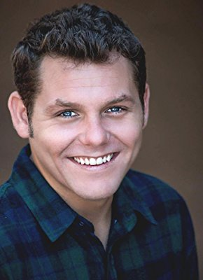
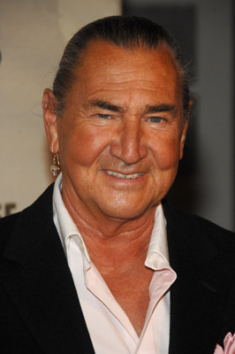
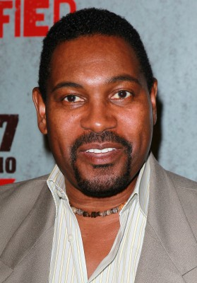
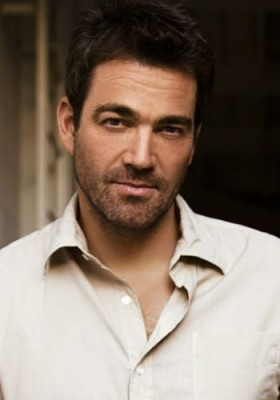
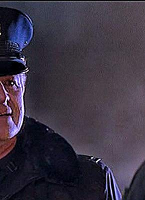

#11211 Free Willy 2 - Freiheit in Gefahr


 IMDB-Wertung: 5.0 / 10
IMDB-Wertung: 5.0 / 10  Metascore: 0
Metascore: 0 
Zwei Jahre nachdem der kleine Jesse dem zahmen Schwertwal Willy zum Sprung in die Freiheit verholfen hat, kommt es zu einem überraschenden Wiedersehen mit dem alten Freund, der inzwischen im Ozean eine Familie begründet hat. Neue Probleme tauchen auf, als vor der Küste ein Öltanker havariert und Willys neues Rudel in akute Lebensgefahr bringt. Ein vermeintlicher Helfer entpuppt sich obendrein als skrupelloser Tierhändler. Erneut ist Jesses Cleverness gefragt.
Jahr: 1995
Dauer: 93 Minuten
FSK: 6
Land: Frankreich Studio: Warner Bros.Tonspuren: DD5.1 - ,
Untertitel:
Auflösung: 1080p (1920x800) Größe: 4843 MB
Genre: Drama, Abenteuer, Familie
Regisseur: Dwight H. Little
Drehbuch: Keith Walker, Karen Janszen, Corey Blechman, John Mattson
Soundtrack: Basil Poledouris
Darsteller:
-  Jason James Richter als Jesse
- Francis Capra als Elvis
- Mary Kate Schellhardt als Nadine
-  August Schellenberg als Randolph
 Michael Madsen als Glenn
Michael Madsen als Glenn- Jayne Atkinson als Annie
-  Mykelti Williamson als Dwight
- Elizabeth Peña als Kate Haley
-  Jon Tenney als John Milner
 M. Emmet Walsh als Bill Wilcox
M. Emmet Walsh als Bill Wilcox- John Considine als Commander Blake
-  Steve Kahan als Captain Nilson
- Neal Matarazzo als Helmsman Kelly
 Al Sapienza als Engineer
Al Sapienza als Engineer- Wally Dalton als Engineer
- Julie Inouye als Reporter
 Basil Wallace als Reporter
Basil Wallace als Reporter- Doug Ballard als Veterinarian
- June Christopher als Veterinarian
- Marguerite Moreau als Julie
- Joan Lunden als Herself
- Erin Chambers als Julie's friend (uncredited)
- Ian Cranston als Boy in crowd (uncredited)
- Keiko als Willy (uncredited)
- Barbara Anne Klein als Helicoptor Medic (uncredited)
- Paul Tuerpe als Milner's Assistant
- Clifford Fetters als Engineer
- Janet Wu als Reporter
- Christina Orchid als Donut Shop Lady
- Edward J. Rosen als Environmental Man
- Isaac T. Arnett Jr. als Camper
- Scott Stuber als Policeman
- Chanel Capra als Teenage Girl at Ferry
- Laura Gary als Whale Spotter
- John Harms als Protester
- Susan Brooks als Protester
- Jeff Brooks als Protester
Datei: X:\4-Tetralogie(A-K)\Free Willy\Free Willy 2 - Freiheit in Gefahr (1995, FSK6, 1920x800).mkv seit 17.05.2019
Festplatte: HD Collection-3(N-Z)-6(A-Z)
 Alle Filme aus Gruppe '4-Tetralogie(A-K)\Free Willy'
Alle Filme aus Gruppe '4-Tetralogie(A-K)\Free Willy'